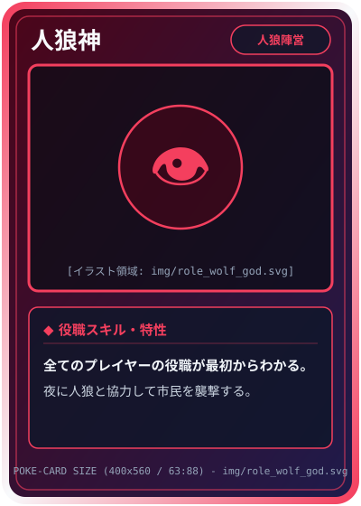
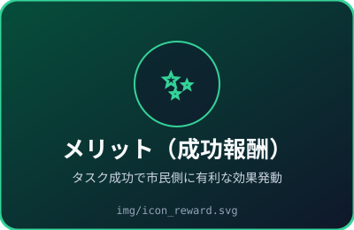
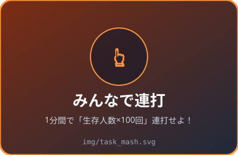
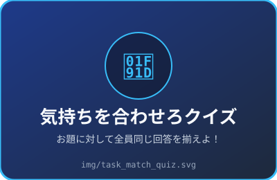
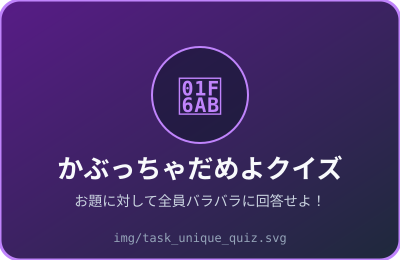
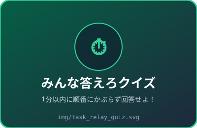
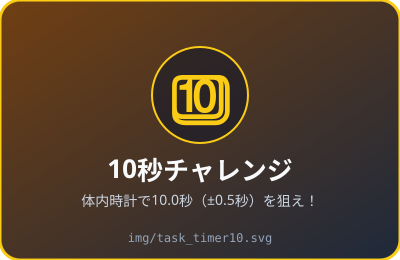
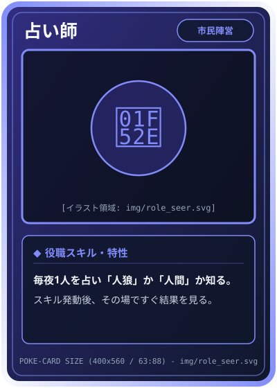
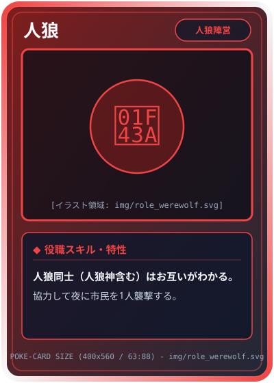
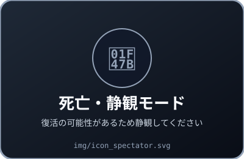

オリジナル人狼ゲーム
ステップ2：プレイヤー名入力
ステップ3：ルームオーナーとして開始
新しいルームIDを発行し、役職の配分を設定します。
ステップ4：ルームIDを入力して入室
入室メンバー一覧（10人）
たろう(オーナー) / じろう / さぶろう / しろう / ごろう / ろくろう / ななこ / はちろう / きゅうた / じゅうべえ
人狼陣営の配分設定（計 3 人）
-
👁️ 人狼神（全役職把握・夜襲）
1
-
🐺 人狼（仲間認識・夜襲）
1
-
🃏 狂人（人間判定）
0
-
🔪 サイコキラー（関わると死亡）
1
市民陣営の配分設定（各1人 or 0人 チェックボックス）
チェックした役職が1人ずつ（恋人は2人組）配役され、残りが「市民」になります。
- 🏠 市民（残り枠へ自動割当） 1人
ルームオーナーの開始を待っています…
オーナーが全員の入室を確認し、役職配分を設定しています。このままお待ちください。
現在の入室メンバー（10人）
- たろう（ルームオーナー）準備OK
- じろう（あなた）準備OK
- さぶろう 他8名準備OK
モック確認用：表示する役職カードを切替

あなたの役職：人狼神
【人狼神の特権】全員の役職が判明しています：じろう(人狼), さぶろう(サイコキラー), しろう(占い師), ごろう(騎士)...
ステップ7：リアルに自己紹介！
参加者全員で順番にリアルで自己紹介をしましょう。全員終わったら初日の夜へ進みます。
ステップ8：初日の夜（誰も殺されません）
※占い師のみスキルを発動できます（初日はサイコキラーを占っても返り討ちは無効）。他の役職は説明文を読んでOKをタップしてください。
【占い師の表示】占う相手を選択
【市民・その他の役職の表示】
初日の夜です。周囲に役職がバレないよう、説明文を読んで下のOKボタンをタップしてください。
昨晩の追放・夜襲・復活結果の発表
- ⚖️ 投票で追放された人 ろくろう
- 🐺 夜襲（または返り討ち）の犠牲者 はちろう
- 💉 復活した人 なし
※ここでどちらかの陣営が全滅していた場合、または5ターン終了時は「ゲーム結果発表画面」へ遷移します。
モック確認用：メリット／デメリット表示切替（1ターン1個抽選）

【成功報酬（メリット）】全員ナイトスキル付与
タスク成功で、今晩市民全員がナイト（護衛）スキルを使えます！（※失敗時は何も起きません）
モック確認用：全5種のミニゲーム画面切替


お題：「赤い果物」【ひらがなで答えろ】
生存メンバー全員の回答が一致すれば成功！

お題：「果物」【ひらがなで答えろ】
他のメンバーと1人も回答がかぶらなければ成功！

お題：「都道府県」【漢字で答えろ】（残り 35秒）
既出：北海道 → 青森県 → 東京都 → 福岡県（次はあなたの番です！）

10.0秒ぴったりでストップ！（9.5〜10.5秒で成功）
🎉 タスク成功！報酬が発動します
各プレイヤーのタスクへの貢献度（回答・回数・秒数）を公開します。人狼がバレないように足を引っ張っていないか推理しましょう！
プレイヤー別 タスク貢献度一覧
- たろう118回 / 10.04秒 (成功)
- じろう105回 / 9.88秒 (成功)
- さぶろう76回 / 8.92秒 (微妙に未達…)
- しろう112回 / 10.21秒 (成功)
- ごろう101回 / 9.65秒 (成功)
生存・脱落プレイヤー状況
- たろう / じろう / さぶろう / しろう / ごろう / ななこ / きゅうた / じゅうべえ生存 8名
- ろくろう / はちろう脱落 2名
📊 今朝のタスク貢献度・発生中の報酬／罰を確認
・今朝の貢献度ワースト：さぶろう（76回 / 8.92秒）
・本日の適用効果：今晩、市民全員がナイトスキル使用可能
追放したいプレイヤーを1人選んで投票
※同票の場合はランダムで決定されます。追放結果の全体発表は翌朝のターン冒頭で行われます。
復活させたい脱落者を1人選んで投票
※追放者・夜襲犠牲者全員が対象です（最悪、人狼を復活させてしまう可能性もあります）。
モック確認用：役職・状態別の夜画面切替

【占い師 / 霊媒師】スキル発動（即時結果確認）
スマホを見る動作で役職がバレないよう、この場ですぐ結果を確認してOKをタップします。

【人狼・人狼神】夜襲対象を多数決で決定
仲間の人狼が複数いる場合は多数決（同票時はランダム）で襲撃先が決まります。
※騎士・コスプレイヤーは護衛対象、奇跡の医者は蘇生対象（ゲーム中1回）を同様に選択します。

【市民・狂人・サイコキラー・恋人】
説明文を読んで、他の役職と同じタイミングで下の「OK」をタップしてください。
【死亡したプレイヤーの画面】
あなたは現在脱落しています。「奇跡の医者」や「タスク報酬」で復活する可能性があるため、ゲーム終了まで静観してください。
モック確認用：勝敗結果バナー切替
🏆 市民陣営の勝利！
人狼陣営が全滅（または5ターン終了時に市民陣営が多数）となりました！
全プレイヤーの役職公開
- たろう人狼神（人狼陣営）
- じろう人狼（人狼陣営）
- さぶろうサイコキラー（人狼陣営）
- しろう占い師（市民陣営）
- ごろう騎士（市民陣営）
- ろくろう霊媒師（市民陣営）
- ななこ・はちろう恋人（市民陣営）
- きゅうた奇跡の医者（市民陣営）
- じゅうべえ市民（市民陣営）